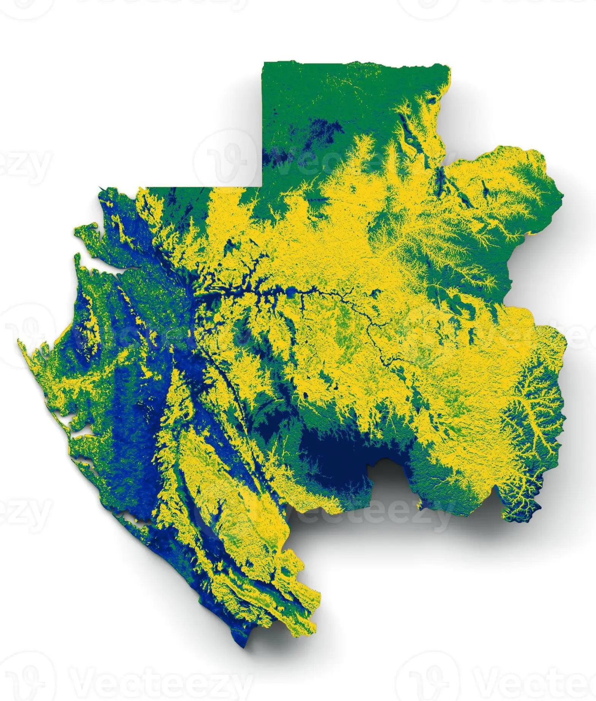
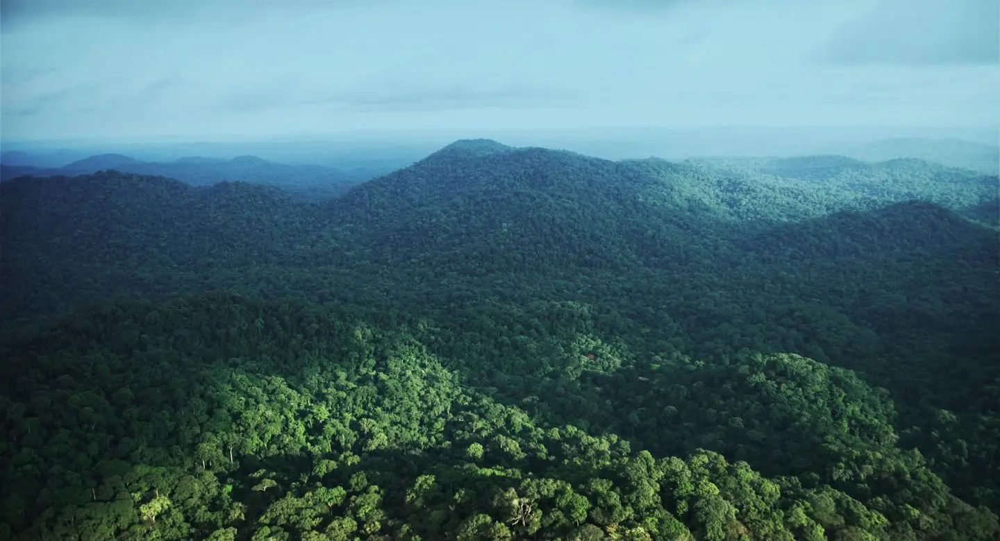

Du ciel au sous sol, le Gabon regorge d'innombrables richesses.
Les couleurs du Drapeau vert jaune et bleu représentent d'ailleurs certaines d'entre elles.

La forêt

L'équateur


Du ciel au sous sol, le Gabon regorge d'innombrables richesses.
Les couleurs du Drapeau vert jaune et bleu représentent d'ailleurs certaines d'entre elles.
